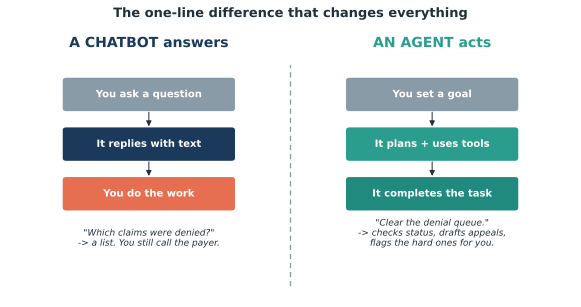
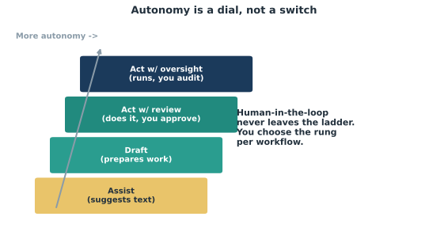

Edisi 1 — Chatbot vs. Agent: apa arti "agentic" sebenarnya
Bayangkan Ratna di billing menutup satu denial dengan sepertiga klik dari yang biasanya — sekarang kalikan itu dengan tiap analis di lantai itu. Itulah cerita yang diam-diam disampaikan angka-angkanya.

Ini statistik yang layak diteruskan: Gartner memproyeksikan sekitar 40% aplikasi enterprise bakal menyematkan agent AI task-specific di 2026, naik dari kurang dari 5% di 2025 (menurut pembacaan Deloitte atas data Gartner). Itu bukan kurva adopsi yang landai — itu step change, dan artinya software yang sudah dipakai direktorat kita bakal mulai mengerjakan tugas, bukan cuma menampilkan layar.
Perbedaan di balik angka itu yang penting buat perencanaan: chatbot menjawab; agent bertindak. Chatbot menangkis pertanyaan dan menghemat beberapa menit. Agent menyelesaikan satu unit pekerjaan — status klaim yang sudah dicek, banding yang sudah disusun, rekonsiliasi yang sudah dimulai — dan karena itu kelihatan di throughput, cycle time, dan cost per task, bukan cuma di survei kepuasan. Waktu kamu memutuskan di mana belanja AI itu berharga, itulah garis pembeda antara nice-to-have dan baris anggaran.

Kenapa ini kerasa lebih kena di finance dibanding tempat lain? Karena pekerjaan kita terstruktur, berbasis aturan, volumenya tinggi, dan bisa diaudit — profil yang persis ditangani agent dengan baik. Satu denial punya kode alasan, kebijakan, deadline, dan jejak dokumen. Itu alur kerja yang bisa dijelajahi agent dan diverifikasi manusia. Makanya tim finance dan revenue-cycle ada di garis depan antrean adopsi, klaim yang bakal kita dukung dengan angka yang lebih kuat di Edisi 2.
Keberatan yang jelas dari pembaca yang berpikiran kontrol: kalau software mulai bertindak, di mana pengawasannya? Sudah tertanam, by design. Tiap alur kerja yang kita deploy menjaga gerbang human-in-the-loop — agent menyiapkan dan mengusulkan; satu orang yang ditunjuk menyetujui; tiap tindakan tercatat di bawah "agent identity" yang scoped supaya bisa diaudit kayak akses sistem lainnya. Otonomi diatur per alur kerja lewat dial (lihat Gambar 1.2), dari "suggest" ke "act with review" ke "act with oversight." Kamu mengkalibrasi risiko; kamu nggak menyerahkannya.
Jadi kasusnya secara analitis sederhana. Kapabilitasnya datang di dalam tool yang sudah kita miliki (40% aplikasi tahun ini). Sasarannya persis pekerjaan yang terstruktur dan repetitif yang menyumbat antrean kita. Dan itu datang dengan kontrol yang bisa diaudit yang fungsi finance bisa benar-benar tanda tangani. Tim yang memperlakukan "agentic" sebagai percakapan anggaran sekarang — bukan percakapan fiksi ilmiah nanti — adalah yang bakal menentukan syarat adopsi mereka sendiri. Surat ini di sini buat memastikan itu kita.
Sumber
- Gartner via Deloitte — ~40% aplikasi enterprise menyematkan agent task-specific di 2026 vs. <5% di 2025.
- kore.ai / Generative, Inc. (2026) — "a chatbot answers; an agent acts."